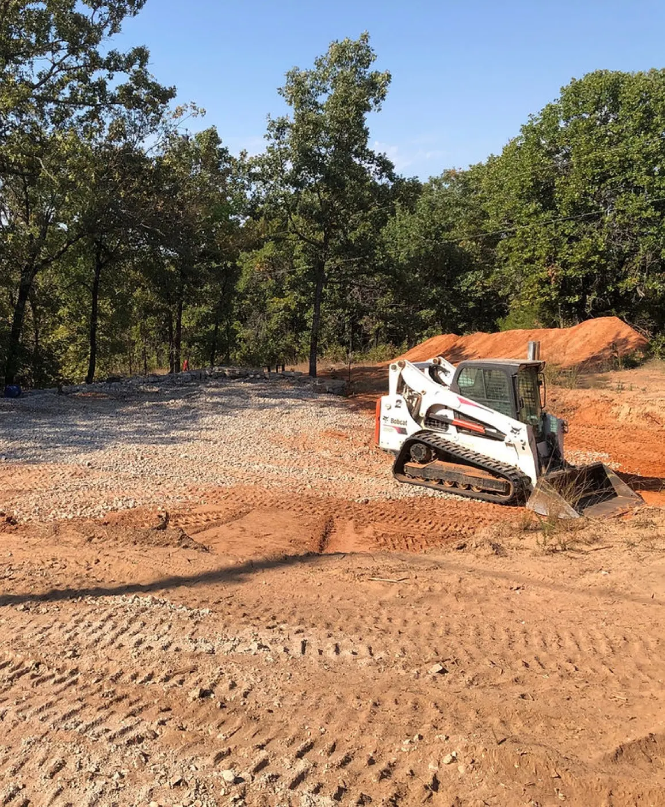
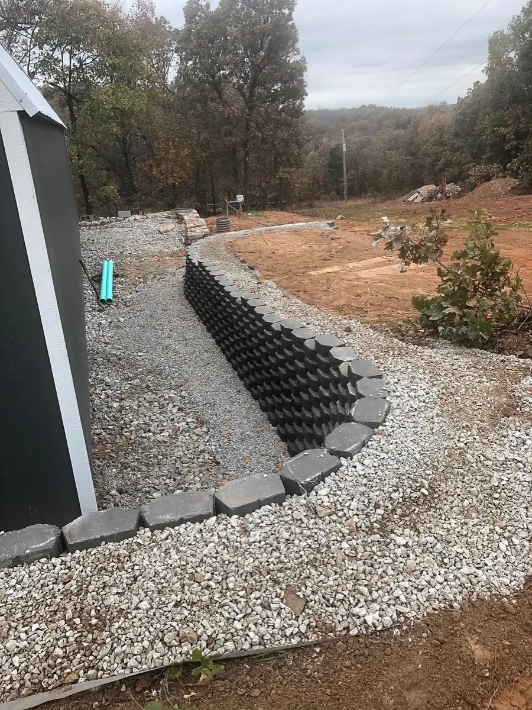
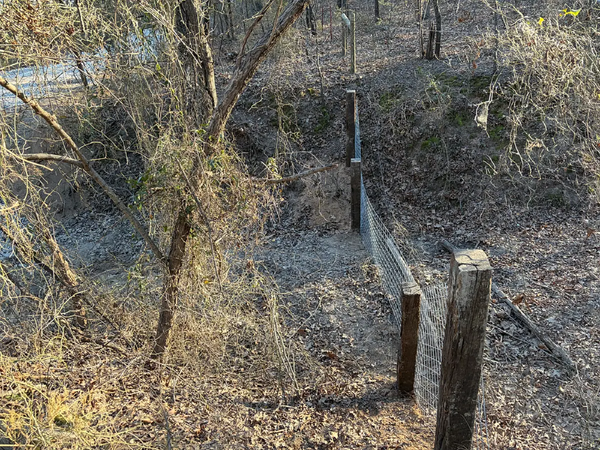
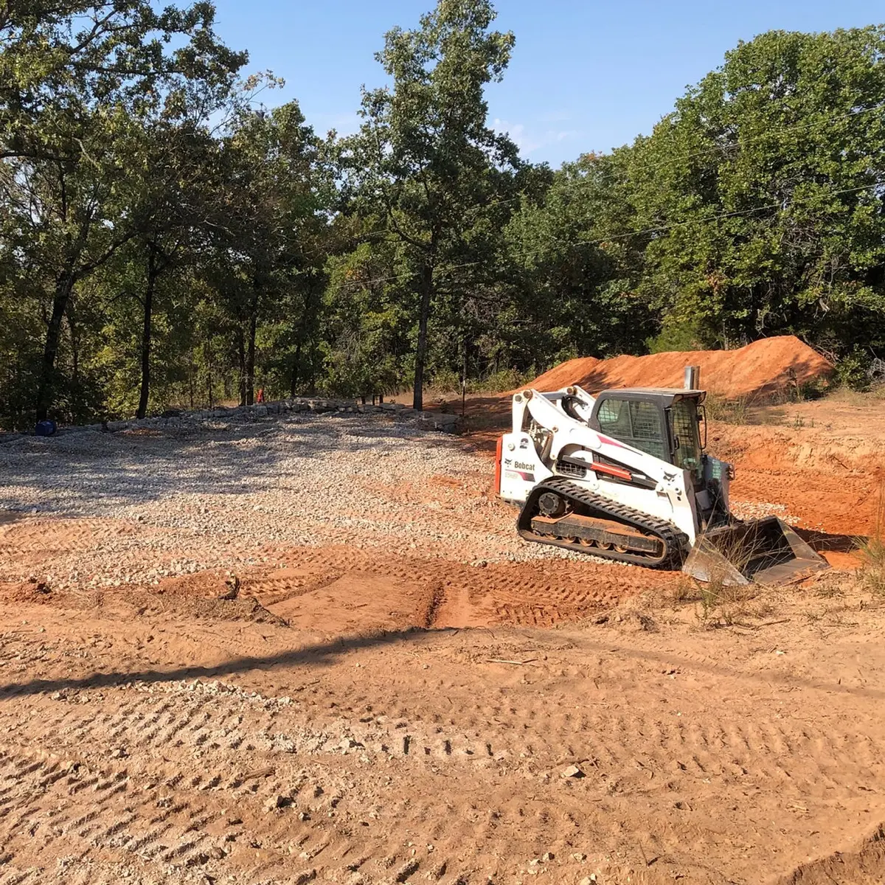
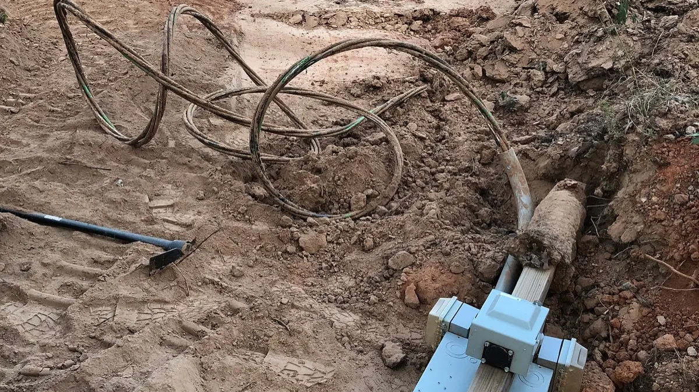

CG Dirt Work and More handles the dirt work that makes property usable across Cleveland, Sand Springs, and the surrounding Pawnee, Osage, Tulsa, and Rogers County communities. Excavation, ponds, retaining walls, driveways, trenching, and land management, with the owner running the machine on every job.
From a building pad that needs grading to a pond that finally holds water, we take on the work that gets your land doing what you need it to do. Here is the dirt work CG Dirt Work and More handles across northeast Oklahoma.






We work on land and property throughout Pawnee, Osage, Tulsa, and Rogers County and the communities around Tulsa.

Pond cost depends on the size, the depth, the soil you are digging in, and how far the dirt has to be moved. A small stock pond is a very different job from a multi-acre recreational pond, so there is no flat rate that fits every property. What we can tell you is that pond excavation done right starts with reading the ground first: how the soil holds water, where the runoff comes from, and where it wants to drain. We dig livestock ponds, drainage ponds, and recreational ponds across the Tulsa metro, Osage County, and northeast Oklahoma, and we will give you a clear estimate after we look at your site.
Erosion on a slope or a creek bank is usually a water problem before it is a dirt problem. Water finds a path, and over a season or two that path turns into ruts, washouts, and a hillside that keeps sliding. The fix is some combination of grading, drainage, and a retaining wall that holds the ground in place. We build boulder and block retaining walls across Pawnee, Osage, Tulsa, and Rogers County built to handle the sloped terrain common in this part of Oklahoma. If your property is washing out, give us a call and we will tell you what it needs.
Before a house, shop, or barn goes up, the ground has to be ready for it. That means clearing the site, grading a level pad, trenching for utilities, and making sure water drains away from the structure instead of toward it. Skip that step or do it cheap and you end up dealing with settling, drainage problems, and work that has to be redone. We handle excavation and site preparation for new builds across Cleveland, Sand Springs, Sapulpa, or the surrounding communities, and we get the ground right before the first wall goes up.
Yes. Land clearing for hunting is one of the things that sets CG Dirt Work and More apart. Most operators can knock down brush. Fewer understand what makes land actually hold and attract wildlife. We work land with an eye for how water, cover, and food plots come together, which means your property gets set up to do more than just look cleared. We do food plot prep, trail cutting, brush and timber clearing, and pond work for hunters and recreational landowners across northeast Oklahoma.
We are based near Tulsa and work throughout Pawnee, Osage, Tulsa, and Rogers County. That covers Cleveland, Hominy, Sand Springs, Sapulpa, Skiatook, Owasso, Collinsville, Sperry, Claremore, Catoosa, and the rural communities within about an hour of home base. If you are not sure whether your property falls inside our range, give us a call and we will let you know.
Yes. CG Dirt Work and More is licensed and insured for every job we take on across northeast Oklahoma.
Neither. The owner runs CG Dirt Work and More and operates the equipment himself on every job. You work directly with the person doing the work, from the first call through the follow-up after the dirt is moved.
Tell us what is going on with your property and you will get back a straight answer and a timeline you can plan around.